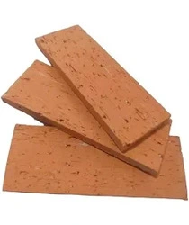

Tijolo Aparente Rústico Mesclado
Descrição do Produto
O Tijolo Aparente Rústico Mesclado confere um charme especial a qualquer ambiente, seja interno ou externo. Sua textura e variação de tonalidades proporcionam um visual acolhedor e autêntico, ideal para projetos de decoração rústica, colonial ou industrial.
Detalhes Técnicos
- Código: TAR-007
- Dimensões por Peça: Aproximadamente 22cm x 10cm x 6cm (variações são características do produto rústico)
- Material: Cerâmica vermelha
- Acabamento: Rústico, com variações de cor e textura
- Indicação de Uso: Alvenaria aparente decorativa, revestimento de paredes, churrasqueiras, lareiras.
- Peças por m² (com junta de 1cm): Aproximadamente 60 peças
- Unidade de Venda: Milheiro ou Peça